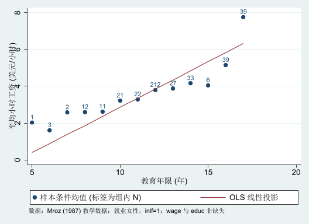

*******************************************************
* FinEco - Chapter OLS / Conditional Expectation
* Purpose: local Stata verification + figure generation
* 已执行核验；本脚本使用冻结的 Mroz 教学数据。
*******************************************************
version 16.0
clear all
set more off
* -----------------------------------------------------
* 0. Output folders
* Run from a writable working directory. The script writes
* to ./output/ols; full logs are local and not published.
* -----------------------------------------------------
capture mkdir "output"
capture mkdir "figs"
capture mkdir "figs/raw"
local outdir "output/ols"
capture mkdir "`outdir'"
capture mkdir "`outdir'/figures"
capture mkdir "`outdir'/tables"
capture mkdir "`outdir'/logs"
* -----------------------------------------------------
* 1. Load the public Wooldridge/Mroz teaching dataset
* -----------------------------------------------------
use "data/ols/mroz.dta", clear
display "Stata version: " c(stata_version)
set scheme s2color
graph set window fontface "Microsoft YaHei"
* Keep source variables unchanged. The wage regression uses
* only observations for which both wage and educ are observed.
count
count if !missing(wage, educ)
* 官方数据将未就业者工资编码为 0；本章研究就业女性工资。
assert wage == 0 if inlf == 0
keep if inlf == 1 & !missing(wage, educ)
assert _N == 428
* -----------------------------------------------------
* 2. Sample conditional means used in the manuscript
* -----------------------------------------------------
quietly summarize wage if educ == 12
scalar mean_wage_12 = r(mean)
scalar n_wage_12 = r(N)
quietly summarize wage if educ == 16
scalar mean_wage_16 = r(mean)
scalar n_wage_16 = r(N)
* -----------------------------------------------------
* 3. Main OLS regression and exact quantities for insertion
* -----------------------------------------------------
regress wage educ
scalar N_ols = e(N)
scalar R2_ols = e(r2)
scalar b_cons = _b[_cons]
scalar b_educ = _b[educ]
scalar se_cons = _se[_cons]
scalar se_educ = _se[educ]
predict double wage_hat if e(sample), xb
predict double e_hat if e(sample), residuals
* -----------------------------------------------------
* 4. Reproducibility checks for OLS algebra
* (a) mean residual = 0 with a constant
* (b) sum(e_i * educ_i) = 0
* (c) regression line passes through (xbar, ybar)
* -----------------------------------------------------
quietly summarize e_hat if e(sample), meanonly
scalar mean_resid = r(mean)
capture drop e_educ
generate double e_educ = e_hat * educ if e(sample)
quietly summarize e_educ if e(sample), meanonly
scalar sum_resid_educ = r(mean) * r(N)
quietly summarize educ if e(sample), meanonly
scalar xbar_educ = r(mean)
quietly summarize wage if e(sample), meanonly
scalar ybar_wage = r(mean)
scalar fit_at_xbar = b_cons + b_educ * xbar_educ
scalar meanpoint_gap = ybar_wage - fit_at_xbar
* -----------------------------------------------------
* 5. Export a machine-readable result file for Codex
* -----------------------------------------------------
tempname fh
file open `fh' using "`outdir'/tables/ols_ch1_results.txt", ///
write text replace
file write `fh' "dataset=mroz" _n
file write `fh' ///
"source=https://www.stata.com/data/jwooldridge/eacsap/mroz" _n
file write `fh' "mean_wage_educ12=" %12.8f (mean_wage_12) _n
file write `fh' "n_educ12=" %12.0f (n_wage_12) _n
file write `fh' "mean_wage_educ16=" %12.8f (mean_wage_16) _n
file write `fh' "n_educ16=" %12.0f (n_wage_16) _n
file write `fh' "N_ols=" %12.0f (N_ols) _n
file write `fh' "b_cons=" %12.8f (b_cons) _n
file write `fh' "b_educ=" %12.8f (b_educ) _n
file write `fh' "se_cons=" %12.8f (se_cons) _n
file write `fh' "se_educ=" %12.8f (se_educ) _n
file write `fh' "R2_ols=" %12.8f (R2_ols) _n
file write `fh' "mean_resid=" %18.12g (mean_resid) _n
file write `fh' "sum_resid_educ=" %18.12g (sum_resid_educ) _n
file write `fh' "xbar_educ=" %12.8f (xbar_educ) _n
file write `fh' "ybar_wage=" %12.8f (ybar_wage) _n
file write `fh' "fit_at_xbar=" %12.8f (fit_at_xbar) _n
file write `fh' "meanpoint_gap=" %18.12g (meanpoint_gap) _n
file close `fh'
* -----------------------------------------------------
* 6. Figure: sample conditional means + individual-level OLS line
* -----------------------------------------------------
preserve
keep if !missing(wage, educ)
* Collapse to one row per education level. The OLS line below
* uses coefficients from the individual-level regression above.
collapse (count) n=wage ///
(mean) mean_wage=wage ///
(sd) sd_wage=wage, by(educ)
generate double ols_fit = b_cons + b_educ * educ
generate double se_mean = sd_wage / sqrt(n) if n > 1
generate double tcrit = invttail(n-1, 0.025) if n > 1
generate double ci_lo = mean_wage - tcrit * se_mean if n > 1
generate double ci_hi = mean_wage + tcrit * se_mean if n > 1
sort educ
* Export grouped means so the figure and manuscript values can
* be audited independently of the graph image.
export delimited educ n mean_wage sd_wage se_mean ///
ci_lo ci_hi ols_fit ///
using "`outdir'/tables/ols_cef_group_means.csv", replace
* Figure requested by the instructor:
* one point per education level + OLS linear projection.
* Numeric labels show the number of observations in each group.
twoway ///
(scatter mean_wage educ, mlabel(n) mlabposition(12)) ///
(line ols_fit educ, sort), ///
xtitle("教育年限 (年)") ///
ytitle("平均小时工资 (美元/小时)") ///
legend(order(1 "样本条件均值 (标签为组内 N)" 2 "OLS 线性投影")) ///
note("数据：Mroz (1987) 教学数据；就业女性，inlf=1；wage 与 educ 非缺失")
local fig "figs/raw/ols-fig03-cef-groupmeans-20260930-152321.png"
graph export "`fig'", ///
width(2400) replace
restore
* -----------------------------------------------------
* 7. Console summary for human audit
* -----------------------------------------------------
display as text "===== FinEco OLS Chapter 1 verification ====="
display as text "educ=12: mean wage=" %9.4f mean_wage_12 ///
" N=" %6.0f n_wage_12
display as text "educ=16: mean wage=" %9.4f mean_wage_16 ///
" N=" %6.0f n_wage_16
display as text "OLS: wage = " %9.4f b_cons " + " %9.4f b_educ " educ"
display as text "SE: cons=" %9.4f se_cons " educ=" %9.4f se_educ
display as text "N=" %6.0f N_ols " R2=" %9.6f R2_ols
display as text "mean residual=" %18.12g mean_resid
display as text "sum(residual*educ)=" %18.12g sum_resid_educ
display as text "ybar - fitted(xbar)=" %18.12g meanpoint_gap(Note: Below code run with echo to enable preserve/restore functionality.)
Stata version: 19.5
not available in non-GUI version
753
753
(325 observations deleted)
Source | SS df MS Number of obs = 428
-------------+---------------------------------- F(1, 426) = 56.41
Model | 547.13493 1 547.13493 Prob > F = 0.0000
Residual | 4131.918 426 9.69933804 R-squared = 0.1169
-------------+---------------------------------- Adj R-squared = 0.1149
Total | 4679.05293 427 10.9579694 Root MSE = 3.1144
------------------------------------------------------------------------------
wage | Coefficient Std. err. t P>|t| [95% conf. interval]
-------------+----------------------------------------------------------------
educ | 0.495 0.066 7.51 0.000 0.366 0.625
_cons | -2.092 0.848 -2.47 0.014 -3.760 -0.425
------------------------------------------------------------------------------
(file output/ols/tables/ols_ch1_results.txt not found)
(0 observations deleted)
(1 missing value generated)
(1 missing value generated)
(1 missing value generated)
(1 missing value generated)
(file output/ols/tables/ols_cef_group_means.csv not found)
file output/ols/tables/ols_cef_group_means.csv saved
(file figs/raw/ols-fig03-cef-groupmeans-20260930-152321.png not found)
file figs/raw/ols-fig03-cef-groupmeans-20260930-152321.png written in PNG forma
> t
===== FinEco OLS Chapter 1 verification =====
educ=12: mean wage= 3.8001 N= 212
educ=16: mean wage= 5.1541 N= 39
OLS: wage = -2.0924 + 0.4953 educ
SE: cons= 0.8483 educ= 0.0659
N= 428 R2= 0.116933
mean residual=-8.39411613946e-16
sum(residual*educ)=-5.38857847232e-12
ybar - fitted(xbar)= 0
